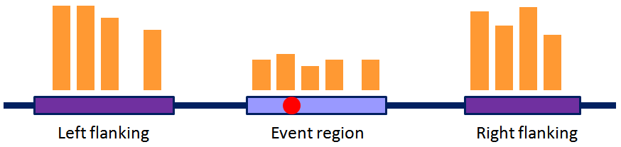

filePaser.pl -- All the sub-routines for getting and parsing input files (NOT involving SNV handling) in the ASARP pipeline.
require "fileParser.pl"; # input arguments: $outputFile--output, # $configs--input configuration file, $params--parameter file my ($outputFile, $configs, $params) = getArgs(@ARGV); my ($snpF, $bedF, $rnaseqF, $xiaoF, $splicingF, $estF) = getRefFileConfig($configs); my ($POWCUTOFF, $SNVPCUTOFF, $ASARPPCUTOFF, $NEVCUTOFFLOWER, $NEVCUTOFFUPPER, $ALRATIOCUTOFF) = getParameters($params); # read the transcript annotation file my $transRef = readTranscriptFile($xiaoF); #get alternative initiation/termination (AI/AT) events from transcripts my $altRef = getGeneAltTransEnds($transRef); # get indices of gene transcript starts and gene names (prepared also for SNVs) my ($genesRef, $geneNamesRef) = getGeneIndex($transRef); # read all annotations, optionally rna-seq and est, events and compile them my $allEventsListRef = readAllEvents($splicingF, $rnaseqF, $estF, $transRef, $geneNamesRef); my $splicingRef = compileGeneSplicingEvents($genesRef, values %$allEventsListRef);
This perl file contains all the sub-routines that handle the input arguments, read configuration files, and parse all the annotations and events that are input to be matched with SNVs to discover ASE/ASARP. SNVs are handled separately in snpParser.
After the processing shown above, the alternative processing events are in the form shown in the figure above, where SNVs (the red dot) will be matched and later Normalized Expression Values can be calculated (NEVs derived from the read counts in orange) to filter alternative patterns in snpParser.

These are the major (interface) sub-routines that will be used in correlation with SNVs in the whole pipeline. Read them one by one as they are quite procedural.
getRefFileConfigget all input annotation/event file/folder paths contained in the configuration file.
input: $configs --configuration file, check out default.config for the formats. output: ($snpF, $bedF, $rnaseqF, $xiaoF, $splicingF, $estF) --SNV list file path ($snpF), --the bedgraph folder path and the specified file extension separated by tab ($bedF), user-specified bedgraph extension can be provided in the configuration file: e.g. bedext<TAB>sam.bed --rna-seq.event file path ($rnaseqF, optional: '' returned if not provided in $configs), --transcript annotation file path ($xiaoF), --annotation.event path ($splicingF), --est.event file path ($estF, optional: '' returned if not provided in $configs)
The default config file as an example can be found in ../default.config.
Lines for RNA-Seq.event and EST.event file paths may be skipped as they are optional.
File formats:
$xiaoFThe example file by default, ../data/hg19.merged.to.ensg.all.tx.03.18.2011.txt, was created by merging ensembl Refseq, UCSC knowngene, Gencode gene, and Vegagene.
Format (tab delimited): ID, chr, strand, txStart, txEnd, cdsstart, cdsend, exoncount, exonstarts, exonends, genename, cdsstartstat,cdsendstat
IMPORTANT: all coordinates are hg19, 0-based start and 1-based end coordinates (UCSC convention) **in this file only???**.
Annotation events specified in $splicingF (example: ../data/annotation.event)
The file contains splicing events as annotated in the above file
($xiaoF). The format is the same as that for rnaseq_event.
(1-based start and end)
RNA-Seq events specified in $rnaseqF (example: ../data/rnaseq.event)
The file contains splicing events as determined by our RNA-seq data. It lists the events for each gene. The format of the events is, EVENT, chromosome, genename, strand, event_region, flanking_region_1, flanking_region_2, where *_region are in the format of starting_coordinate-ending_coordinate. (1-based start and end)
EST events specified in $estF (example: ../data/est.event)
The file contains splicing events as determined from hg19 EST and cDNA data. The format is tab-delimited as: event_type, event_name, starting_coordinate, ending_coordinate. (1-based start and end)
getParametersget all the numeric parameters including p-value cutoffs, NEV lower/upper thresholds, and the allelic ratio difference threshold.
input: $params --configuration file for the parameters output: ($POWCUTOFF, $SNVPCUTOFF, $ASARPPCUTOFF, $NEVCUTOFFLOWER, $NEVCUTOFFUPPER, $ALRATIOCUTOFF) --read count cutoff for powerful SNVs ($POWCUTOFF), --Chi-Squared Test p-value cutoff for individual SNVs ($SNVPCUTOFF), --Fisher's Exact Test p-value cutoff for target-control SNV pairs in ASARP ($ASARPPCUTOFF), --NEV lower and upper cutoffs (excl.) ($NEVCUTOFFLOWER, $NEVCUTOFFUPPER), --allelic ratio difference cutoff for target-control SNV pairs in ASARP ($ALRATIOCUTOFF)
The default parameter config file as an example can be found in ../default.param. All parameters are required and have to be set.
readTranscriptFileread the transcript annotation file
input: $xiaoF --file path of the transcript (also gene) annotation file. output: $transRef --reference to an array of the parsed transcripts.
The results can be printed out using utility sub using key 'trans': printListByKey($transRef, 'trans');
getGeneIndexintermediate sub to get indices of gene transcript starts and gene names
input: $transRef (see above) output: $genesRef --reference to the index for every gene's minimal transcript start $geneNamesRef --reference to the gene names
getGeneAltTransEndsget alternative initiation/termination (AI/AT) events from transcripts
input: $transRef (see above) output: $altRef--reference to the AI/AT events
The AI/AT results can be printed out using utility sub: printAltEnds($altRef);
readAllEventsread all annotations, optionally rna-seq and est, splicing events
input: ($splicingF, $rnaseqF, $estF, $transRef, $geneNamesRef); --event files (see above): anno ($splicingF), rna ($rnaseqF), est ($estF) --see above for $transRef, $geneNamesRef output: $allEventsListRef --the reference to a hash of all 'anno', optionally 'rna', 'est' events parsed quoted are keys to access them in the hash
compileGeneSplicingEventscompile events from different files and arrange them according to genes
input: ($genesRef, values %$allEventsListRef) --see above for $genesRef --the 2nd argument is the event type(s) provided, e.g. 'anno', 'rna', 'est' output: $splicingRef --reference to all the splicing events
Utility sub-routines are implemented to get or display parsing annotations/events for intermediate usage or checking.
Parsing results are usually arranged in an internal data structure whose reference is returned.
input: ($ref, $key) --the reference to a structure and the corresponding key for the structure. output: print out the content of the structure chromosome by chromosome.
e.g. printListByKey($transRef, 'trans'); to print out all transcripts;
or printListByKey($snpRef, 'powSnps'); to print out all powerful SNVs (SNPs)
getListTagget list tag (type of resources)
input: the reference to the structure of events/annotations of a certain type output: the tagged type (or simply tag) for this list
getListByKeyChrget the references to hash+idx of a particular chromsome number from an internal structure
input: ($ref, $key, $chr) --reference to the structure ($ref), --the corresponding key of the structure ($key), --the chromosome number specified ($chr in the range of 1 - $CHRNUM) output: ($hsArry[$chr], $idxArry[$chr]) --the references to hash+idx of a particular chromsome number
This utility sub is frequently used in the intermediate processing of all kinds of events, annotations and SNVs.
binarySearchserve as a general utility to get the location of an element in an ordered list (a good example is the indices _idx)
binary search for insert (or location), including left, right insert (location) cases, similar to bisectin Python. Assume the elements in the list are sorted in an ascending order and there is no duplicate.
input: ($listRef, $x, $imin, $imax, $type) --the reference to a list, the element to be searched ($x), --starting index ($imin), e.g. 0, ending index ($imax), e.g. size of the list - 1, --$type: 'left' (default) or 'right' mimicing left or right bisect. 'left': if $x matches an element, the return location will be left to the element; 'right': the return location right to the element if matched output: ($loc, $flag) --location of $x in the list (NOTE: range is [0, size of list], 0-based, i.e. there can be size of list + 1 possible locations for an element) --match flag: 1 means match, 0 means no match
Kindly go to have a look at the source: ../fileParser.pl. There will be some comments around. Good luck!
This pipeline is free software; you can redistribute it and/or modify it given that the related works and authors are cited and acknowledged.
This program is distributed in the hope that it will be useful, but without any warranty; without even the implied warranty of merchantability or fitness for a particular purpose.
Cyrus Tak-Ming CHAN
Xiao Lab, Department of Integrative Biology & Physiology, UCLA